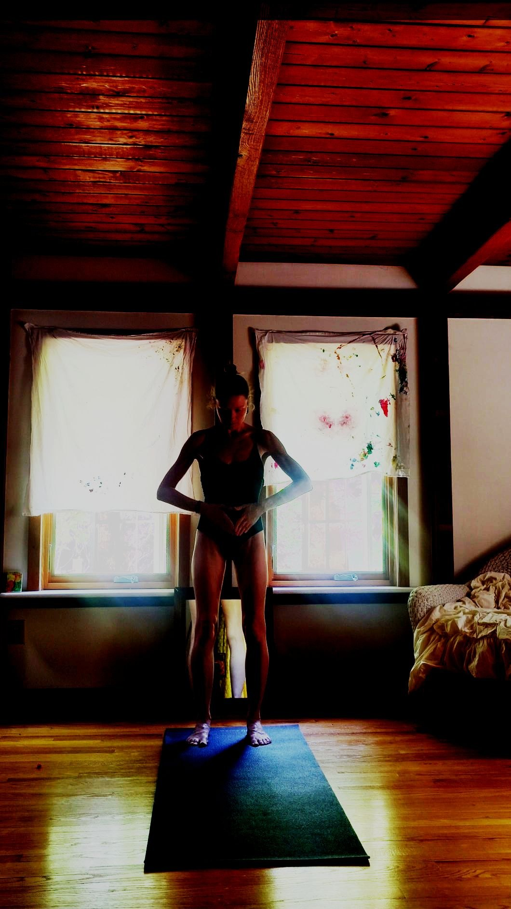
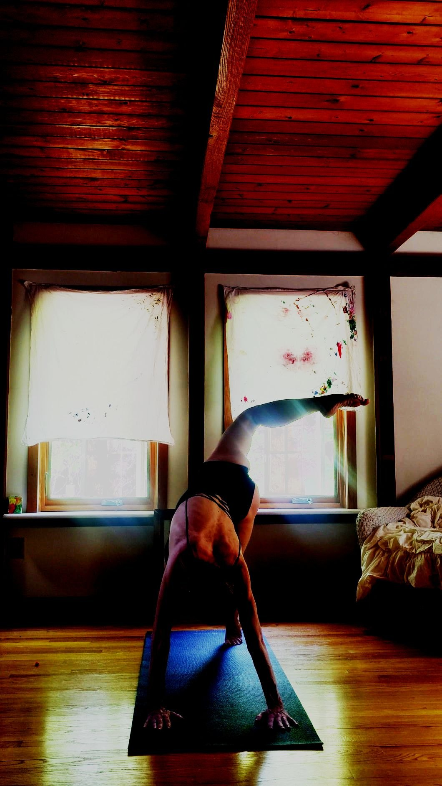

The Path
Free your heart · Find balance · Learn to fly
N0B0X guidance is rooted in Dr. Gabor Maté's Compassionate Inquiry — a process of gentle, honest self-exploration that uncovers what lies beneath our patterns and opens the way to lasting change.

Free Your Heart
Examine your mode of operation in the world through guided exploration and intuitive self-study.

Find Balance
Develop the practices in your life to achieve the goals and create the freedoms you desire in your lived experience.
Learn to Fly
Integrate the mental, emotional, spiritual and sexual perspectives aligned with your unique state of grace.
To me, N0B0X means no boundaries, infinite expansion. What could it mean to you?